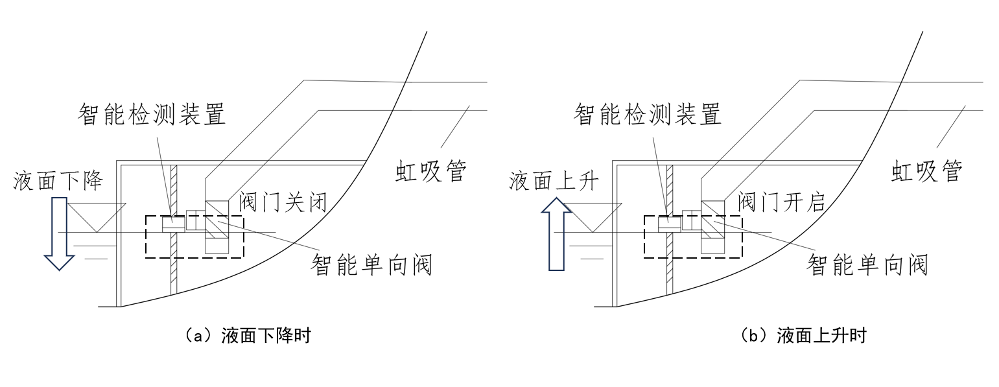

“虹吸未来”是一款基于自主研发的主动虹吸排水系统，专为城市内涝、地下建筑积水、隧道渗漏与边坡失稳等场景打造。系统通过物理虹吸原理与智能控制技术相结合，实现自动启动、持续排水、低能耗运行的新型解决方案。
系统采用“压力气室 + 虹吸汲水舱 + 智能监测装置”三大核心结构。通过气室调节真空状态，使积水在无外部能量驱动下自动排出，即便在极端天气下仍可自动恢复虹吸效应，保障稳定运行。

主动虹吸排水系统基于液位差与大气压原理，通过智能阀门与气室控制，使液体在无外部动力下实现持续流动。系统可自动检测积水、自动排水并自动恢复真空，实现全流程闭环控制。
用于调节系统真空度和内部压力平衡。当液位变化时，气室通过进气和排气管调节气体流通，实现防渗与稳定运行。
设置于排水源点，配备水位监测与单向阀系统。当水位上升时阀门开启；当水位下降时阀门关闭防止空气进入。
“虹吸未来”系统广泛应用于城市防涝、交通隧道、地下建筑与边坡防护等场景，能在复杂环境下持续运行，守护城市安全。
部署于低洼区域、地下车库、人防工程等地，自动排水，保障城市正常运行。
主动排出围岩地下水，降低结构水压，防止渗漏腐蚀，延长隧道寿命。
降低孔隙水压力，增强边坡抗剪强度，防止滑坡和地基失稳。
适用于地铁站、地下商场等，实现无人值守的自动排水系统。
《软弱地基加固：智能减饱和土工格栅新方法》
专利号：202411509164.7
《智能地质锤：多功能岩石强度测试新工具》
专利号：202410340386.4
排水法测气体流量：创新实验装置及方法
低洼道路积水自动虹吸排水系统新方案
实验室气体流量测量与控制装置
新型堵漏剂：高效解决裂缝和孔洞封堵问题
“虹吸未来”团队持续推动专利技术产业化，致力于成为智慧排水系统的引领者。